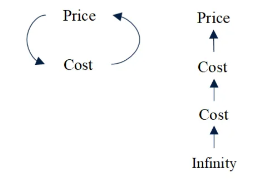
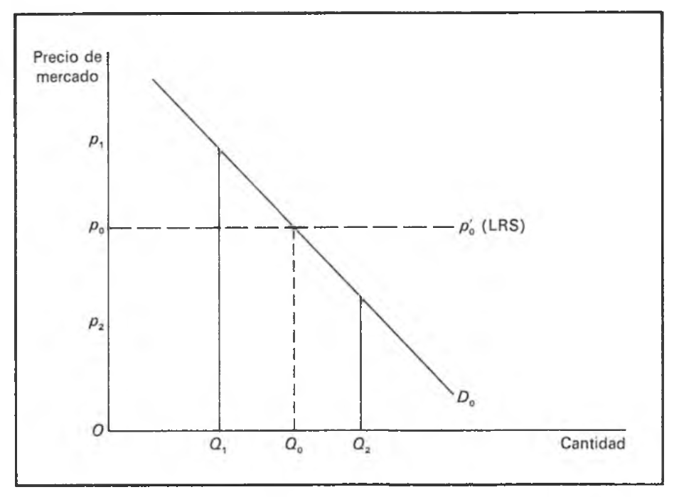
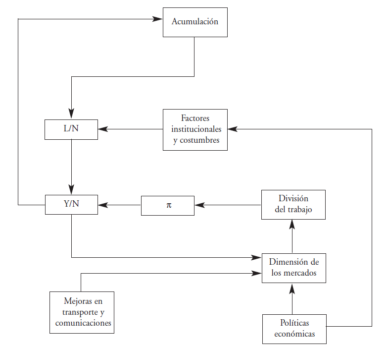

Historia del Pensamiento y del Análisis Económico
U4. La economía política. El pensamiento clásico. Adam Smith
Adam Smith: el padre de la economía
Economía pre-científica y científica
- Aunque Petty, Cantillon y fisiócratas fueron antecedentes importantes, el estudio de la economía como un campo distintivo de análisis comienza efectivamente en el siglo XVII
- Escuela clásica de economía funda y da origen a la disciplina de la economía –nace la economía política
- Antes \(\longrightarrow\) investigación sobre temas económicos dos deficiencias fundamentales
- ausencia de una concepción sistémica y de interdependencia –ie. equilibrio general
- ausencia de identificación de reglas, leyes y regularidades que gobiernan las interacciones económicas –i.e “leyes naturales”
El padre de la criatura

Orígenes y formación académica
- Adam Smith nació en 1723 en Kirkaldy, Escocia, hijo de un funcionario de aduanas que falleció poco después de su nacimiento. Su formación académica estuvo marcada por dos experiencias contrastantes:
- Universidad de Glasgow (1737): Estudió con Francis Hutcheson en un sistema educativo donde los estudiantes pagaban directamente a sus profesores, generando incentivos para una enseñanza de calidad.
- Balliol College, Oxford (1740-1746): Asistió con una beca, pero desarrolló una visión crítica por su enfoque tradicionalista, autoritario y memorístico. Aprovechó el tiempo en la Biblioteca Bodleian para seguir sus propios intereses intelectuales.
Carrera académica y primeras obras
- Tras abandonar la idea de seguir una carrera eclesiástica, Smith construyó una notable trayectoria académica:
- 1748-1751: Impartió exitosas lecciones públicas en Edimburgo sobre retórica y literatura inglesa.
- 1751: Se convirtió en profesor de la Universidad de Glasgow, primero de Lógica y luego de Filosofía Moral, abarcando teología, ética, jurisprudencia, política y economía política.
- 1759: Publicó “La teoría de los sentimientos morales”, que alcanzó seis ediciones durante su vida y le ganó reconocimiento intelectual –Smith la consideró su mejor obra.
Viaje y gestación de La Riqueza de las Naciones
- En 1764, Smith renunció a su cátedra en Glasgow para convertirse en tutor del joven duque de Buccleuch, lo que le proporcionó:
- Una renta anual vitalicia de 300 libras
- La oportunidad de conocer a figuras clave de la Ilustración: Voltaire en Ginebra, d’Alembert y Quesnay en París, a quien pensó en dedicarle su libro.
- Contacto con ambiente intelectual francés, esp. fisiócratas
- Entre 1767 y 1773, Smith regresó a Kirkaldy donde se dedicó a la redacción de “La riqueza de las naciones”, que finalmente se publicó el 9 de marzo de 1776 tras tres años adicionales de trabajo en Londres.
Últimos años y legado
- El trabajo más conocido de Smith tuvo una recepción muy favorable, con cinco ediciones en doce años. Sus últimos años estuvieron marcados por:
- Su nombramiento como comisionado de aduanas de Escocia en 1778
- Un importante memorando sobre la situación americana donde predijo acertadamente la independencia de las colonias y el desplazamiento del centro económico hacia Norteamérica
- Su amistad con figuras como David Hume y Benjamin Franklin y su posicionamiento contra el comercio de esclavos
- Smith falleció el 17 de julio de 1790, habiendo ordenado la destrucción de dieciséis volúmenes de manuscritos.
Contribuciones metodológicas e intelectuales
- El legado de Smith trasciende sus obras publicadas a través de:
- La integración de filosofía moral, jurisprudencia y economía política en un marco analítico coherente
- Enfoque vincula análisis económico con consideraciones éticas e históricas
- El desarrollo de ideas sobre instituciones y su evolución histórica que influyeron en las ciencias sociales modernas
- Visión influida por filosofía escocesa, pensamiento ilustrado francés y el empirismo británico
- Referente fundamental en los debates contemporáneos sobre economía, política y filosofía moral.
Método y filosofía
Motivaciones humanas y sentimientos
- Es un error centrarse solo en La Riqueza de las Naciones
- La Teoría de los Sentimientos Morales es decisiva para entender su noción de interés personal (self-interest)
- Las Lectures on Rhetoric y Essays on Philosophical Subjects son importantes para comprender su método
- Punto de partida epistemológico \(\longrightarrow\) análisis de las motivaciones humanas
- Tres sentimientos fundamentales \(\longrightarrow\) asombro, sorpresa y admiración
- La naturaleza presenta acontecimientos incoherentes que perturban la imaginación. La filosofía introduce orden en este caos
Sistemas filosóficos y metodología
- sistemas filosóficos \(\longrightarrow\) “meras invenciones de la imaginación para reunir los fenómenos de la naturaleza que de otro modo aparecen inconexos y discordantes”
- intelectual juega un papel activo –creando más que descubriendo conocimiento
- Opuesto a la idea de Galileo (y Petty) de “descubrir” leyes de la naturaleza; sigue aquí los pasos de David Hume en este aspecto
- Rechaza la idea de una estructura matemática de la realidad (la idea de la aritmética política de Petty); no era rechazo a los datos ni su utilidad
Leyes naturales y motivaciones humanas
- Adopta un metodología flexible y ecléctica –abandona la idea de “leyes de la naturaleza” objetivas al tiempo que reconoce la complejidad de motivaciones humanas (pasiones, intereses)
- La filosofía del derecho natural se entiende como aquel que se interesa por la propiedad personal que cada individuo tiene sobre si mismo
- corpus de derechos del hombre antes de la existencia del Estado
- Derecho natural \(\longrightarrow\) coraza ante el avance del Estado; además como prescripción de no avanzar sobre conducta y libertad individual
La noción de sistema en Adam Smith
- Muchos sugieren que Smith obtuvo la noción e idea de sistema de los fisiócratas
- notas de clase y apuntes sugieren que las ideas de sistema ya estaban presentes antes de que Smith viajara a Francia [principales partes del Libro I]
- Pero si es posible que haya sido influenciado para escribir el Libro II donde elabora sobre el concepto de “adelantos al capital”
- El libro La Riqueza de las Naciones –cuyo título original fue An Inquiry into the Nature and Causes of the Wealth of Nations es un libro de naturaleza mixta
La noción de sistema en Adam Smith (cont.)
- El sistema de Smith combinaba varios elementos: 1) teoría de la naturaleza humana, 2) teoría de la historia, 3) forma de teología natural y 4) observaciones prácticas sobre la vida económica
- El principal problema económico en la época de Smith era la relación del individuo con el Estado y las funciones adecuadas del Estado
- Las opiniones de Smith se basaban en su sistema de teología natural –doctrina greco-escolástica del derecho natural
La noción de sistema en Adam Smith (cont.)
- El derecho natural es más facil entenderlo como aquel que se interesa por la propiedad personal que cada individuo tiene sobre si mismo y como un esfuerzo para subrayar que hay un corpus de derechos del hombre antes de la existencia del Estado
- en otras palabras, el derecho natural es visto como una coraza ante el avance del Estado y una prescripción en el sentido de restringir las funciones del gobierno en interés de la libertad individual
El derecho natural y la naturaleza humana
Cada individuo intenta [mediante el empleo de su capital] que el ingreso anual de la sociedad sea tan grande como pueda. Por regla general, no intenta promover el bienestar público ni sabe cuánto está contribuyendo a ello. Prefiriendo apoyar la actividad doméstica en vez de la foránea, sólo busca su propia seguridad, y dirigiendo esa actividad de forma que consiga el mayor valor, sólo busca su propia ganancia, y en este como en otros casos está conducido por una mano invisible que promueve un objetivo que no entra en sus propósitos. Tampoco es negativo para la sociedad que no sea parte de su intención ya que persiguiendo su propio interés promueve el de la sociedad de forma más efectiva que si realmente intentase promoverlo. No son muchas las cosas buenas hechas por aquellos que dicen dedicarse al comercio en favor del bienestar público. También es verdad que esta es una actitud poco común entre los comerciantes, y unas pocas palabras bastan para disuadirlos de ella [Smith, A. La Riqueza de las Naciones, Libro I (1776)]
El derecho natural y la naturaleza humana (cont.)
- Consideraba que existía una armonía natural en el mundo económico que hace que la intervención gubernamental sea innecesaria e indeseable en la mayoría de las materias
- Pero también esta premisa y proposición resulta de la convicción de Smith del descaro del burócrata que desde una posición paternalista nos dice lo que debemos hacer en areas y temas en los que conocemos nuestros propios intereses mejor que nadie
El derecho natural y la naturaleza humana (cont.)
- Para Smith esta naturaleza humana era invariable y tenía características innatas:
- Que los humanos nos interesamos más por las cosas más próximas y menos por las más distantes
- Que los humanos tienen un deseo arrollador por mejorar su condición
- En otras palabras, los humanos son self-centered
- Más importante \(\longrightarrow\) el hombre económico en la RN no es diferente del hombre moral en la TSM
- en la primera, la simpatía refrena el egoísmo; en la segunda, la competencia limita el egoísmo [Smith critica fuertemenete el monopolio]
El libro La Riqueza de las Naciones
- Los títulos de sus 5 (cinco) libros son:
- Of The Causes of Improvement in the productive Powers of Labour, and of the Order according to which is Produce is naturally distributed among the different Ranks of the People
- Of the Nature, Accumulation and Employment of Stock
- Of the different Progress of Opulence in different Nations
- Of Systems of political Econonomy
- Of the Revenue of the Sovereign or Commonwealth
El libro La Riqueza de las Naciones (cont.)
- No es un libro enteramente científico, analítico y desacoplado de cuestiones de la realidad como el Essai de Cantillon
- De hecho, el libro 3 es un libro esencialmente normativo –donde Smith opina sobre cómo debió haber sido el progreso en diferentes etapas y naciones y el libro 4 es abiertamente polémico –ataque decisivo contra el mercantilismo y su extenso sistema de regulaciones
- No obstante a pesar de ello, es una obra escrita por un pensador profundo ansioso por descubrir la naturaleza de las cosas
El libro La Riqueza de las Naciones (cont.)
- Hay una gran cantidad de elementos y temas en semejante obra. Pueden resumirse las principales aportaciones en las siguientes:
- Una teoría de la organización productiva
- Una teoría de las causas del crecimiento económico
- Una teoría del valor y la distribución
- Una teoría del dinero y el capital
El libro La Riqueza de las Naciones (cont.)
- El Libro I argumenta que el crecimiento económico depende de la división del trabajo la cual a su vez es organizada a través del mercado y de lo que él llama el interés individual
- El Libro II explica cómo la posesión de activos facilita la división del trabajo (la promueve) y la acumulación de activos promueve el incremento
Teoría de la historia
- Identificó cuatro etapas evolutivas en el desarrollo de la civilización:
- Período cazador \(\longrightarrow\) no habia derechos de propiedad, no había demanda de gobierno (nomadismo, escasez poblacional)
- Período pastoril \(\longrightarrow\) aparece sociedad civil como consecuencia de propiedad privada y acumulación; sociedad de jerarquías; gobierno replica esa estructura
Teoría de la historia (cont.)
- Identificó cuatro etapas evolutivas en el desarrollo de la civilización:
- Período agrícola \(\longrightarrow\) mayor estabilidad en producción, mayor población y asentamientos; gobierno civil desecentralizado –“feudalismo”
- Período comercial \(\longrightarrow\) ciudades como centros comerciales; surgen librecambistas y capitalistas; conflicto urbano-rural; autogobierno de ciudades; florece comercio y oportunidades
- La fuerza que motoriza la transición entre períodos es para Smith el egoísmo económico
La microeconomía de Smith
Valor y precios
- El tema e hilo central de La Riqueza de las Naciones es el crecimiento económico. Pero una diferencia con la contribución de los fisiócratas es que Smith desarrolló una teoría del valor
- Una distinción conceptual útil para el desarrollo de la economía
- valor en uso \(\longrightarrow\) utilidad de un objeto particular
- valor en cambio \(\longrightarrow\) capacidad de comprar otros bienes
- Valor en uso es un requisito previo del valor en cambio –¿algo que no tiene utilidad y que nadie desea puede tener valor en cambio?
- pero el valor en cambio determinado a partir de elementos diferentes de los que se determina el valor en uso
Valor en uso y valor en cambio
…la palabra valor tiene dos significados distintos: unas veces expresa la utilidad de un objeto particular, y otras veces la capacidad de comprar otros bienes que confiere la posesión de tal objeto Podemos llamar al primero “valor en uso” y al otro “valor en cambio”. Las cosas que tienen gran valor en uso, frecuentemente apenas tienen valor en cambio; y por el contrario, aquellas que tienen un gran valor en cambio apenas tienen valor en uso. Pocas cosas hay más útiles que el agua, pero con ella no se puede comprar casi nada. Por el contrario, un diamante apenas tiene valor en uso y, sin embargo, se puede cambiar por una gran cantidad de bienes [Smith, A. La Riqueza de las Naciones, Libro I (1776)]
Paradoja del valor y matices sobre el valor
- Conocida como la paradoja del valor, la economía clásica fue incapaz de resolverla –no supieron explicar la existencia y significado de las valoraciones marginales [Smith y los clásicos no consideran el valor en uso como algo mensurable]
- En la economía clásica la referencia al valor es en general valor en cambio pero reconocieron algunos matices de la discusión sobre el valor en función de si el objetivo es:
- remontarse al origen de todo –“fuente” del valor
- facilitar comparaciones entre bienes –patrón (medida) del valor
- identificar teóricamente cómo se fijan –determinación del valor de cambio
Trabajo y valor
- Inicialmente centraron el problema del valor en el trabajo –teoría del valor-trabajo comunes entre filósofos del derecho natural; trabajo y tierra componentes del valor para Petty y Cantillon
- los primeros concebían al valor-trabajo como un índice de sacrificio para obtener un bien
- los segundos concebían al valor-trabajo como una teoría de los costes de producción física
- Smith usó ambas; teoría del valor-trabajo (TVT) propuesta como teoría del trabajo necesario y como teoría del trabajo ordenado
- Discutía trabajo como medida del valor y trabajo como causa del valor
Teoría del trabajo “ordenado”
Todo hombre es rico o pobre según el grado en que pueda gozar de las cosas necesarias, convenientes y gratas para la vida. Pero una vez establecida la división del trabajo, es sólo una pequeña parte la que se puede procurar con el esfuerzo personal. La mayor parte de ellas se conseguirán mediante el trabajo de otras personas, y será rico o pobre, de acuerdo con la cantidad de trabajo ajeno de que pueda disponer o se halle en condiciones de adquirir. En consecuencia, el valor de cualquier bien, para la persona que lo posee y que no piense usarlo o consumirlo, sino cambiarlo por otros, es igual a la cantidad de trabajo que pueda adquirir o de que pueda disponer por mediación suya. El trabajo, por consiguiente, es la medida real del valor en cambio de toda clase de bienes [Smith, A. La Riqueza de las Naciones, Libro I (1776)]
Teoría del trabajo “ordenado” (cont.)
- En el pasaje Smith no pretende identificar los factores que determinan el valor de cambio sino que indicar el patrón con el que medirlos –la base del tiempo de trabajo sería buena para expresar relaciones de intercambio en terminos cuantitativos
- Trabajo ordenado da el número de horas de trabajo requeridas para ganar un salario igual al precio del bien
- diríamos “dos horas de trabajo adquieren (ordenan) un kilo de carne
- Pero esto no resuelve el tema de la determinación del valor de cambio
Teoría del trabajo necesario
- Según esta teoría, las proporciones de cambio entre dos mercancías son proporcionales a las cantidades de trabajo necesario para producirlas
- Smith sólo consideró valida esta teoría en las sociedad primitivas
- Pero en sociedad modernas (capitalista) los trabajadores no poseen ni el \(K\) ni la \(T\) que usan en su trabajo
- no tiene sentido esta teoría en este tipo de sociedad
Teoría del trabajo necesario (cont.)
En el estado primitivo y rudo de la sociedad, que precede a la acumulación de capital y a la apropiación de la tierra, la única circunstancia que puede servir de norma para el cambio recíproco de diferentes objetos parece ser la proporción entre las distintas cantidades de trabajo que se necesitan para adquirirlos. Si en una nación de cazadores, por ejemplo, cuesta usualmente doble trabajo matar un castor que un ciervo, el castor, naturalmente, se cambiará por o valdrá dos ciervos. Es natural que generalmente es producto del trabajo de dos días o de dos horas valga el doble que la que es consecuencia de un día o de una hora
Teoría del trabajo necesario (cont.)
- En este pasaje reconoció lo dicho anteriormente sobre el trabajo como explicación única del precio de mercado luego de los primeros dos períodos de la civilización
Los salarios, el beneficio y la renta son las tres fuentes originarias de todo el ingreso, así como de todo valor de cambio. Cualquier otro ingreso [intereses, impuestos, etc.] se deriva en última instancia de alguna de esas tres [Smith, A. La Riqueza de las Naciones, Libro I (1776)]
Valor de cambio: determinación
- Distinguió entre precio de mercado –precio observado en el mercado- y precio natural –precio teórico que expresa condiciones de reproducción del proceso productivo
Cuando el precio de una cosa no es ni más ni menos que el suficiente para pagar la renta de la tierra, los salarios del trabajo y los beneficios del capital empleado en obtenerla, prepararla y traerla al mercado, de acuerdo con sus precios corrientes, aquélla se vende por lo que se llama su precio natural. […] El precio al que se vende comúnmente la mercancía se llama precio de mercado.
Valor de cambio: determinación (cont.)
- Smith refiere a costos de producción pero es insuficiente como teoría de los precios \(\longrightarrow\) si se necesita acero para producir carbón y carbón para producir acero no se puede determinar el precio del carbón si no se lo conoce de antemano; el argumento resulta en circularidad!
- aquí Petty y Cantillon parecen haber sido más refinados usando el principo del trabajo necesario
- La determinación del valor de cambio es un tema no resuelto en Smith \(\longrightarrow\) sugirió también la teoría de la suma de los componentes
Valor de cambio: determinación (cont.)
La teoría del valor natural explica el precio en términos del coste de producción. Pero los costes son precios. Se hacen pagos para comprar (alquilar) los diferentes factores. En definitiva, la teoría del valor natural explica los precios por medio de los precios! Una teoría completa del valor debe explicar las causas y fundamentos de los pagos que se realizan a los factores [Smith, A. La Riqueza de las Naciones, Libro I (1776)]
Valor de cambio: determinación (cont.)
Costo \(\longrightarrow\) precio. Esta formulación analítica introduce severos problemas. Los costos explican precios. Pero los costos a su vez son precios. De este modo, o el costo es explicado por el precio del bien final (loop infinito) o por otro costo (cadena infinita de costos). Ejemplo. El precio del pan es determinado por el costo del trabajo (del capital y de la tierra). Pero el costo del trabajo es determinado por el costo de necesidades primarias como el pan, cuyo precio depende a su vez del precio del trabajo.
Valor de cambio: determinación (cont.)
Valor de cambio: determinación (cont.)
- Esta teoría implica que el precio de una mercancía corresponde a los salarios, beneficios y rentas más los costes soportados (incurridos) por los factores diferentes de la tierra y el trabajo, es decir, los salarios, beneficios y rentas del capital (medios de producción) y así hasta el origen
\[\begin{align} p=w+\pi+r \end{align}\]
- el valor de una mercancía pues depende de la tecnología y de los “tipos” naturales de salario, renta y beneficio
Valor de cambio: determinación (cont.)
- Problema con esto (crítica de Ricardo) \(\longrightarrow\) un aumento de (la tasa de) salario debe producir un aumento del precio al mismo tiempo que no se modifica (la tasa de) beneficio \(\longrightarrow\) lo cual no era observable
- sólo viable si los pagos a los tres factores son independientes!
- La teoría de la suma de los componentes no resuelve el problema de la determinación de los valores de cambio \(\longrightarrow\) más apropiada como antecedente de contabilidad nacional –i.e. teoría distributiva del \(Y\)
Precio de mercado y precio natural
- Establece una dicotomía entre precio natural y precio de mercado (precio real)
- Precio de mercado (precio real) \(\longrightarrow\) se determina por interacción de \(O\) y \(D\) a corto plazo
- Precio natural \(\longrightarrow\) se determina por costos de producción a largo plazo
- Si bien no tiene la claridad del análisis marshalliano, puede interpretarse como veía esto Smith
Precio de mercado y precio natural (cont.)
Precio de mercado y precio natural (cont.)
- Si \(p_{0}\) es el precio natural –igual a suma de tasas naturales de salarios, beneficio y renta- y una curva de demanda efectiva con pendiente negativa, \(D_{0}\)
- la demanda efectiva de Smith es la cantidad demanda al precio natural, \(0Q_{0}\) \(\longrightarrow\) \(p_{0}\) y \(D_{0}\) son precio y cantidad de equilibrio a largo plazo
- Si la cantidad es menor (\(Q_{1}\)) a la demanda efectiva, algunos podrían pagar más y pujan subiendo el precio hasta \(p_{1}\).
- Si la cantidad es mayor (\(Q_{2}\)) a la demanda efectiva, algunos bienes deberán venderse a consumidores que paguen menos que el precio natural
Precio de mercado y precio natural (cont.)
- En definitiva, Smith a través de este análisis parece haber comprendido los conceptos de elasticidad de oferta y demanda a corto plazo, y también el proceso de ajuste del mercado entre el corto y largo plazo
- Notese como aqui juega el rol del egoísmo (self-interest) y la competencia para ajustar el mercado
- básicamente terminó por hacer obsoleto el concepto y la naturaleza del justo precio de los escolásticos –la competencia aseguraba la difusión homogénea del poder de mercado y que se volviera al precio natural!
Precio de mercado y precio natural (cont.)
- Smith no logró desenmarañar las dos vertientes/tradiciones del valor –aunque concedió que el valor podía verse influenciado por la utilidad
- Distinguió entre demanda absoluta (deseo) y demanda efectiva (deseo+poder de compra) –DE aquella de compradores que estén dispuestos a pagar el precio natural (suficiente para pagar los costos de producción)
- El precio natural para Smith era no sólo de equilibrio (“precio central hacia el que gravitan continuamente los precios de todas las mercancias”) sino que era invariable a largo plazo –OALP horizontal!
Precio de mercado y precio natural (cont.)
- Además reconoció que su modelo y tratamiento era abstracto –los mercados en la vida real no funcionan siempre asi!
…aunque el precio de mercado de cada mercancía particular está de esta forma oscilando en torno al precio natural, pueden acaecer circunstancias particulares, causas naturales, y regulaciones políticas concretas, que mantengan el precio de mercado durante mucho tiempo por encima del precio natural [Smith, A. La Riqueza de las Naciones, Libro I (1776)]
- Por circunstancias particulares y causas naturales refiere a temas de información; tierras especiales para ciertas producciones; y por regulaciones todo lo atinente a monopolios
Precio de mercado y precio natural (cont.)
- Su modelo guarda relación con el Tableau Economique de los fisiócratas por ser un sistema y preveer relaciones de causa-efecto
- También comprendió de manera clave la interdependencia de mercados de bienes y de factores
- los precios de los productos no pueden estar en equilibrio a LP a menos que los precios de los factores también lo estén –antecedente de Walras
- Importante contribución pero con algún elemento residual de explicación tautológica
Precio de mercado y precio natural (cont.)
- En conclusión, Adam Smith no provee una teoría completamente adecuada de los valores de cambio \(\longrightarrow\) lo que si proporciona es una teoría del trabajo ordenado que es simplemente una indicación de cómo medir los precios de las mercancías
- Sólo con David Ricardo la teoría del valor en su sentido moderno de teoría de los precios relativos toma el centro de la escena.
Los factores de producción
- A diferencia de sus predecesores, Smith fue de los primeros que dividió a la sociedad en 3 (tres) clases o grupos sociales
- Trabajadores \(\longrightarrow\) salario
- Capitalistas (empresarios) \(\longrightarrow\) beneficio
- Terratenientes \(\longrightarrow\) renta
- Sin embargo, Smith no desarrolló una teoría satisfactoria de la determinación los precios de los factores: salarios \(w\), renta \(r\) y beneficio \(\pi\) aunque si ofreció algunas intuiciones
Los factores de producción (cont.)
- Razonaba que los trabajadores recibían un salario estrictamente de supervivencia (por asimetrías de poder y negociación)
- Ingresos de capitalistas y terratenientes –beneficios y rentas-, podían considerarse como excedente
- para Smith el excedente es la parte del ingreso que excede a lo que es necesario para reconstituir el stock inicial de medios de producción y subsistencia (trabajadores)
- En el proceso de crecimiento, aumentan las rentas y disminuyen los beneficios (competencia de los capitales)
Los factores de producción: salario
- Prepara el terreno para el desarrollo del concepto clásico del fondo de salarios
- esta es al mismo tiempo una teoría de los salarios y una teoría del capital
- Acumulación de \(K\) permite el empleo de \(L\) al tiempo que este capital acumulado es un fondo para el mantenimiento de la población trabajadora \(\longrightarrow\) fondo de salarios representan adelantos a los trabajadores por parte del capitalista a partir de los cuales está legimitado para resarcirse
Los factores de producción: salario (cont.)
La persona que cultiva la tierra rara vez tiene lo suficiente para mantenerse hasta la recolección. Su mantenimiento lo obtiene generalmente del capital del patrón que le emplea, y que no tendría interés alguno en hacerlo a menos que participe en el producto de su trabajo o a menos que reponga su capital con un beneficio [Smith, A. La Riqueza de las Naciones, Libro I (1776)]
- como puede verse la existencia de un fondo de salarios es al mismo tiempo una fundamentación del ahorro (acumulación), una explicación del salario y el beneficio y un determinante del crecimiento de la población
Los factores de producción: salario (cont.)
- En el análisis de Smith, todo ahorro debe ser invertido –i.e. va al fondo de salarios
- Por otra parte, ofrece una teoría alternativa –“teoría contractual de los salarios”
- \(w\) dependen de fuerzas relativas de empleadores y trabajadores –obvio: límite mínimo a la baja del salario (salario de subsistencia)
- Si fondo de salarios crece, y \(w\) por encima del nivel de subsistencia, puede crecer la población (propagación de especie)
- pero no puede ser indefinido porque será cada vez mayor la carga sobre el fondo de salarios (a largo plazo \(\longrightarrow\) salarios de subsistencia)
Los factores de producción: salario (cont.)
- Diferenció entre determinación de salarios a largo plazo y corto plazo
- a LP considera que \(w\) determinado por costo de mantenimiento y reproducción de trabajadores –salario natural es de “subsistencia” entendida como pago mínimo exigido antes de tener hijos
- a CP \(w\) puede estar por arriba/abajo de \(w\) en LP por varias razones
- Incluso prevee que \(w\) a LP puede ser creciente si economía en crecimiento (por mayor demanda de trabajo)
Los factores de producción: salario (cont.)
- Interpretó las “diferencias” (primas) salariales en equilibrio
- elaboró sobre idea de Cantillon en relación a diferencias de habilidad y esfuerzo; de riesgo e insalubridad
- Salarios pueden variar por:
- Ingratitud del empleo (directamente proporcional)
- Costo de aprendizaje (directamente proporcional)
- Continuidad del empleo (inversamente proporcional)
- Confianza en el empleado (directamente proporcional)
- Probabilidad de éxito (inversamente proporcional)
Los factores de producción: beneficio e interés
- Consideró al beneficio como un rendimiento del capital mas que como una recompensa al empresario
- La principal característica del beneficio es su incertidumbre
- Para Smith el beneficio surge como la suma de 2 (dos) pagos
- rendimiento por el \(K\) adelantado
- compensación por el riesgo
- Se considera que vio al beneficio como un residuo pero algunos pasajes de su obra muestran que a veces lo incluyó como determinante del precio de los bienes
Los factores de producción: beneficio e interés (cont.)
En realidad, los beneficios elevados tienden mucho más que los salarios altos a elevar el precio de la obra… Nuestros comerciantes y fabricantes se quejan mucho de los malos efectos de los salarios altos porque elevan el precio, disminuyendo en consecuencia sus ventas tanto en el interior como en el extranjero. Pero no dicen nada en cuanto a los males efectos de los altos beneficios. [Smith, A. La Riqueza de las Naciones, Libro I (1776)]
Los factores de producción: renta
- Para Smith, la discusión de renta involucra tres elementos
- elementos de monopolio
- idea de excedente residual
- costes alternativos
- “La renta de la tierra es un precio de monopolio” declaró Smith y la definió como “el precio que se paga por el uso de la tierra”
- A diferencia del beneficio que no es claro, para Smith la renta es claramente un pago residual
- es la parte que queda luego de pagar salarios y beneficios \(\longrightarrow\) renta no determina el precio sino que viene determinada por el precio
Los factores de producción: renta (cont.)
La renta entra en la composición del precio de las mercancías de manera distinta a como lo hacen los salarios y el beneficio. Salarios y beneficios altos (o bajos) son la causa de precios altos (o bajos); una renta alta (o baja) es la consecuencia del precio. [Smith, A. La Riqueza de las Naciones, Libro I (1776)]
Los factores de producción: renta (cont.)
- Consideró que había elementos de monopolio –negociación de contrato (area cultivable), fertilidad, localización
- ¿Comó se explican las rentas diferenciales? \(\longrightarrow\) sobre la base de costes alternativos
- la renta de la tierra dedicada a un uso concreto dependerá de la productividad de la tierra en su mejor uso alternativo
La macroeconomía de Smith
La organización productiva
- La organización y división del trabajo es la base y el punto de partida de la teoría de crecimiento económico de Smith
- Explica con ejemplos y aplicaciones las ganancias de la especialización y de la división de trabajo
- División del trabajo no es un fenómeno nuevo pero Smith es el primero en ubicarla en el centro de su análisis aplicado al crecimiento y niveles de vida de un país
- razones para la división de trabajo en Platón –provenían más de la naturaleza, diferencias innatas
- Smith privlegia rol de la educación y la experiencia
Riqueza nacional y trabajo
- “…la riqueza de las naciones” viene dada por el ingreso per capita –i.e. nivel de vida la población. Sean la renta nacional, \(Y\), la cantidad de producto obtenida en promedio por cada trabajador mult. por el nro. de trabajadores empleados. Dividiendo por \(N\) (población total)
\[\begin{align} Y&=\pi L \\ \frac{Y}{N}&=\pi\frac{L}{N} \end{align}\]
- tenemos que el nivel de vida depende de 2 factores: 1) la proporción de ciudadanos empleados; 2) la productividad de su trabajo
La fábrica de alfileres
- Una de las más famosas anécdotas en la economía es la famosa alegoría de Smith de la fábrica de alfileres
El mayor progreso de la capacidad productiva del trabajo, y la mayor parte de la habilidad, destreza y juicio con que ha sido dirigido o aplicado, parecen haber sido los efectos de la división del trabajo [Smith, A. La Riqueza de las Naciones, Libro I (1776)]
Productividad y división del trabajo
Según Adam Smith, la productividad del trabajo depende principalmente del nivel y extensión alcanzado por la división del trabajo y a su vez este depende de la dimensión y tamaño de los mercados.
- identifica 3 circunstancias que vinculan la productividad con la división del trabajo:
- El aumento en la destreza en cada uno de los trabajadores individuales
- El ahorro de tiempo que se suele perder en pasar de un tipo (puesto) de trabajo a otro
- La invención de un gran número de máquinas que facilitan y abrevian la tarea
División del trabajo y tamaño del mercado
- Cuando una empresa se expande aumenta su producción tanto por el aumento de trabajadores como por el aumento de productividad. La tabla muestra un ejemplo.
| Empresa | L | Y | Var Y | Var L | Var Pi |
|---|---|---|---|---|---|
| A | 1 | 10 | |||
| B | 10 | 50000 | 5000% | 10% | 500% |
- toda restricción al tamaño (crecimiento) del mercado es por lo tanto opuesta tajantamente por Smith
La base de la riqueza y el crecimiento
Si se observan las comodidades del más común de los artesanos o jornaleros en un país civilizado y próspero se ve que el número de personas cuyo trabajo, aunque en una proporción muy pequeña, ha sido dedicado a procurarle esas comodidades supera todo cálculo. Por ejemplo, la chaqueta de lana que abriga al jornalero, por tosca y basta que sea, es el producto de la labor conjunta de una multitud de trabajadores. El pastor, el seleccionador de lana, el peinador o cardador, el tintorero, el desmotador, el hilandero, el tejedor, el batanero, el confeccionador, y muchos otros que deben unir sus diversos oficios para completar incluso un producto tan corriente. Y además ¡cuántos mercaderes y transportistas se habrán ocupado de desplazar materiales desde algunos de estos trabajadores a otros que, con frecuencia viven en lugares muy apartados del país! Especialmente, ¡cuánto comercio y navegación, cuántos armadores, marineros, fabricantes de velas y de jarcías, se habrán dedicado a conseguir los productos de droguería empleados por el tintorero, y que a menudo proceden de los rincones mas remotos del mundo! [Smith, A. La Riqueza de las Naciones, Libro I (1776)]
La base de la riqueza y el crecimiento (cont.)
si examinamos, repito, todas esas cosas, y observamos qué variedad de trabajo está ocupada en torno a cada una de ellas, comprenderemos que sin la ayuda y cooperación de muchos miles de personas el individuo más insignificante de un país civilizado no podría disponer de las comodidades que tiene, comodidades que solemos suponer equivocadamente que son fáciles y sencillas de conseguir. Es verdad que en comparación con el lujo extravagante de los ricos, su condición debe parecer sin duda sumamente sencilla; y sin embargo también es cierto que las comodidades de un príncipe europeo no siempre superan tanto a las de un campesino laborioso y frugal, como las de éste superan a las de muchos reyes […] que son los amos absolutos de las vidas y libertades de diez mil […] [Smith, A. La Riqueza de las Naciones, Libro I (1776)]
La base de la riqueza y el crecimiento (cont.)
It is the great multiplication of the productions of all the different arts, in consequence of the division of labour, which occasions…that universal opulence which extends itself to the lowest ranks of the people [Adam Smith, *The Wealth of Nations, Libro I (1776)]
Riqueza nacional y crecimiento económico
Riqueza y tipos de trabajo
- Discrepaba fuertemente con los mercantilistas sobre lo que era riqueza \(\longrightarrow\) “el valor de cambio del producto anual de la tierra y el trabajo del país”
- Pero \(\longrightarrow\) sólo consideraba que riqueza involucraba producción de bienes físicos y cayó en la desafortunada distinción entre trabajo productivo (bienes tangibles) e improductivo (cosas intangibles) –esencialmente todo servicio era improductivo!
- Como dijimos antes, Smith en realidad pretendía distinguir entre actividades que aumentan la inversión y aquellas que no (sólo satisfacen consumo)
Acumulación de \(K\)
- La división de trabajo pone en marcha el proceso de crecimiento es la acumulación de \(K\) lo que mantiene el proceso
- Naturaleza, acumulación y empleo de stock (ie. riqueza)
- Acumulación de \(K\) amplía fondo de salarios, lo que permite mayor cantidad de trabajadores y esto amplía el producto nacional
- el beneficio es lo que permite aumentar continuamente el fondo de salarios
- El crecimiento es así un fenómeno continuo y la restricción última a este crecimiento es la dificultad de encontrar inversiones rentables